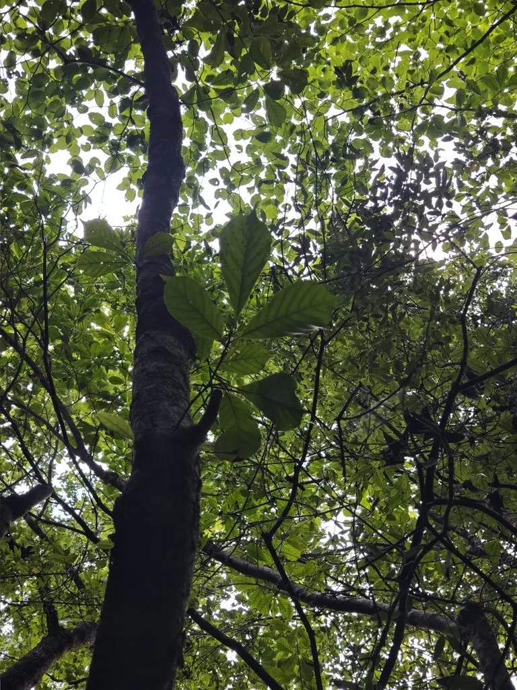

乔木 · 植物界
天目木兰 Magnolia amoena

木兰科木兰属落叶乔木，中国特有，花淡粉至紫红色、先花后叶，野生种群仅见于浙皖山地，被列为珍稀濒危植物。
- 分类
- 门被子植物门纲木兰纲目木兰目科木兰科属木兰属
- 栖息环境
- 海拔 700–1000 米的山地常绿阔叶林与灌丛，喜凉爽湿润、多云雾
- 地理分布
- 中国浙江天目山、安徽黄山及江西、江苏部分山地，为中国特有种
- 保护级别
- IUCN 易危（VU）；中国国家二级保护野生植物，野生个体稀少
物种志
天目木兰为落叶乔木，高可达 12 米，树皮灰白色、平滑，小枝细长。叶片倒卵形或椭圆状倒卵形，长 10–15 厘米，先端渐尖，下面被白色短柔毛。花先叶开放，单生枝顶，花被片 9 枚，淡粉红色至紫红色，芳香，直径约 8 厘米；聚合果圆柱形，长 10–15 厘米，成熟时开裂露出红色种子。
本种为中国特有种，野生植株仅见于浙江天目山、安徽黄山与江西、江苏部分山地，生于海拔 700–1000 米的常绿阔叶林与灌丛中，喜凉爽湿润、多云雾的山地气候与肥沃的酸性土壤。它花大色艳、先花后叶，是优良的早春观赏树种，各地植物园已有引种栽培。由于分布区狭窄、野生个体稀少，天目木兰被列为国家二级保护野生植物，IUCN 评估为易危。
形态与习性
- 株高可达 12 米，树皮灰白色平滑
- 花期3–4 月，先花后叶，花淡粉色
- 果期9–10 月，聚合果圆柱形
- 光照喜光，幼树稍耐阴
- 水分喜湿润多雾，怕积水
- 土壤深厚肥沃、排水良好的酸性黄壤
- 主要用途早春观赏、园林绿化与种质保护
趣味知识
- 天目木兰的模式产地是浙江天目山，因此得名“天目”。
- 它先开花后长叶，早春满树粉花，是江南山地最醒目的早春花木之一。
- 木兰科的花被片没有花萼与花瓣之分，天目木兰的 9 枚花被片常呈粉白渐变。
- 野生天目木兰数量很少，植物园与保护区通过采种育苗开展迁地保护。